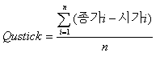

Qstick Indicator
Qstick Indicator
 개요
개요
Qstick Indicator는 Candle의 몸통 크기를 이동평균한 값을 통해 주가의 변동성을 파악하는 지표입니다.
 계산식
계산식

(4일간의 종가와 시가 차의 평균)
signal = Qstick Indicator의 9일 이동평균
 해석 및 활용
해석 및 활용
지표선 반전 활용
Qstick Indicator의 값이 최고점이면 매도 시점, 최저점이면 매수 시점으로 해석
signal 활용
Qstick Indicator이 signal을 상향 돌파하면 매수 시점, 하향 돌파하면 매도 시점으로 해석